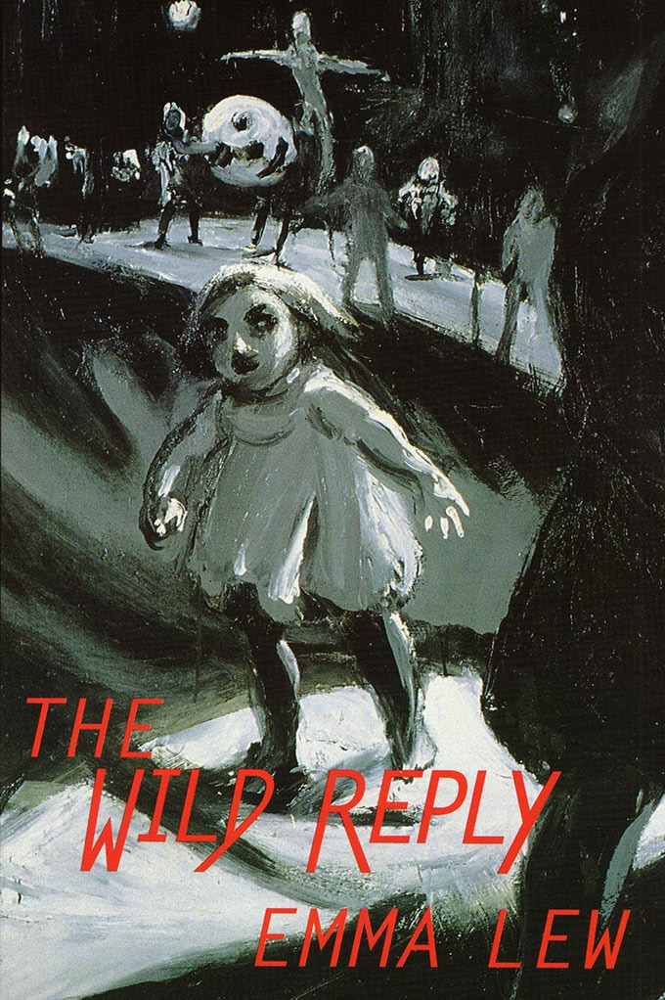

The Wild Reply
Emma Lew

Description
Winner of the Mary Gilmore Prize (1998) Joint winner of The Age Book of the Year Prize (the Dinny O'Hearn Poetry Prize) (1998) Lew's first book has an astonishing originality in its vivacious imperatives ("Start out and remain a villainess") and cool humour ("Will technology make me remote?"). This is often poetry of unadorned statements or questions and subtle non-sequiturs, which are always suprising, yet always confidently irreplaceable. She uses a variety of stanza forms and sometimes rhymes and half-rhymes. In one of the best poems, 'They Flew Me in on the Concorde from Paris', the detachment of the narrator wavers between sardonic and naive to dramatic effect. Lew's brisk, puzzling, intelligent narrators have not been heard before. Gig Ryan, Judge, The Age Book of the Year Prize He was already the least curable, most diminished of people. Civilization increased his moments of sadness. I knew this from the nature and number of scars. Let them be collected. Let them be classed with method. Reading Emma Lew ’ s poetry is like entering a cinema after the movie has started. Mysteriously, you arrive just at the climax. The characters are in full flight: the urgency of their need and demand for recognition is immediately apparent. In its scale and intensity hers is an essentially dramatic art, one which claims its own right to speak, with a defiant gesture and powerful assertion, against hosility, disappointment or - worse still - indifference. This is a first collection of uncommon strength justly called The Wild Reply . Ivor Indyk In The Wild Reply , Lew projects the cinematic mystery and baroque wit of Cocteau and Buñuel. Adam Aitken, The Australian’s Review of Books
Description
Winner of the Mary Gilmore Prize (1998) Joint winner of The Age Book of the Year Prize (the Dinny O'Hearn Poetry Prize) (1998) Lew's first book has an astonishing originality in its vivacious imperatives ("Start out and remain a villainess") and cool humour ("Will technology make me remote?"). This is often poetry of unadorned statements or questions and subtle non-sequiturs, which are always suprising, yet always confidently irreplaceable. She uses a variety of stanza forms and sometimes rhymes and half-rhymes. In one of the best poems, 'They Flew Me in on the Concorde from Paris', the detachment of the narrator wavers between sardonic and naive to dramatic effect. Lew's brisk, puzzling, intelligent narrators have not been heard before. Gig Ryan, Judge, The Age Book of the Year Prize He was already the least curable, most diminished of people. Civilization increased his moments of sadness. I knew this from the nature and number of scars. Let them be collected. Let them be classed with method. Reading Emma Lew ’ s poetry is like entering a cinema after the movie has started. Mysteriously, you arrive just at the climax. The characters are in full flight: the urgency of their need and demand for recognition is immediately apparent. In its scale and intensity hers is an essentially dramatic art, one which claims its own right to speak, with a defiant gesture and powerful assertion, against hosility, disappointment or - worse still - indifference. This is a first collection of uncommon strength justly called The Wild Reply . Ivor Indyk In The Wild Reply , Lew projects the cinematic mystery and baroque wit of Cocteau and Buñuel. Adam Aitken, The Australian’s Review of Books
{kind=link}
Information
| ISBN | 1876044136 |
| Release | 1997 |
| Pages | 56 |
About the Author
Reviews
Martin Duwell, The Weekend Australian
The Wild Reply Martin Duwell The Weekend Australian , 14-15 March, 1998 Dragons in Their Pleasant Palaces is something like Porter’s 17th book of, poems; The Wild Reply is Emma Lew’s first. Here, as with all good first books, one meets a consistent, unusual and challenging voice. Most of the poems might be described as monologues reduced to surreal narrative fragments, but there is also group of night-saturated expressionist lyrics. Reading most of the poems is a bit like coming to grips with a set of intense outbursts without clues as to either the speaker or the situation; or, to paraphrase Ivor Indyk’s comment on the book’s cover, to arrive at the cinema just before the climax of the film. You have the sensation that Lew has set out to write a set of monologues from a coherent group of speakers (family friends or family members or even characters from fiction) and then to strip away all contextual clues. Two things happen to the innocent reader; first we focus on the intensity of the poem (and Lew is an intense poet) and, second, our interpretive drive pushes us to try to intuit the situation, the key to this particular barbarous sideshow. It’s an exciting tension and it sustains a brilliant first book.
Bev Roberts, Australian Book Review
Confounding Order Bev Roberts (poet) Australian Book Review , No. 191, June 1997 A recent article on Les Murray quoted his view that: ‘Poetry consists of three things... The thinking mind, the dreaming mind, and the body. The body’s there for the dance, the rhythm.’ All, yes, Les, but where are the emotions - and the uncomfortable irrationality of emotions? This question seemed particularly apposite when I read Emma Lew’s The Wild Reply - which at some points did indeed seem to be a wild reply to Murray’s dictum. While the considerable strengths of her poems include thinking, dreaming and rhythm, they also include the impact of disturbing and pervasive currents of emotion. In fact the whole book is charged with emotions which confound order and certainty. The power of many poems is achieved through the sustained tension between the assured technique, the complex and sophisticated tropes and the fears, doubts and existential terrors invoked in such simple terms as ‘Everything we do is scary’, ‘I don’t know where I am / I never know what’s going to happen’ - and the far from simple apprehension of Newlyweds, the dead in them; War crying Wage me! Wage me! Orphanages of ideas. But back to the book. The Wild Reply is a first collection but for many readers it will not introduce a new voice. Emma Lew’s work has been widely published in literary journals throughout Australia (and in other countries) and those who’ve read them - or heard them at readings - have long been looking forward to the appearance of her first book. Such anticipation is amply justified: this is an extraordinary book as well as an extraordinary first book, revealing a mature and impressive poetic talent. One of the remarkable aspects of that talent is Lew’s ability to create compelling first lines which draw the reader into the poems and into immediate and intense engagement: ‘I feel that I can trust you with a secret...’; ‘So I became his bluish-white partner...’; ‘Of what earthly use is Madame Bovary to me...’. The strong and urgent rhythms, dramatic images and passionate voice of the poems are irresistible but sometimes bewildering, with the focus of the poem hard to find, elusive as a dream. ‘Cheap Silhouette’, for example, begins with ‘I need to know / the truth about / the elevator crash’, then moves through a series of staccato, imperative statements to a vivid but mystifying conclusion: This must be the world’s sexiest cruise, or a speeded-up version of Coppelia. You see me in a little fury, blue halo whirling in the last full year of peace. In a cover note, Ivor Indyk responds to these features of the poems through a cinematic analogy: ‘Reading Emma Lew’s poetry is like entering a cinema after the movie has started. Mysteriously, you arrive just at the climax. The characters are in full flight: the urgency of their need and demand for recognition is immediately apparent.’ For me, the experience was more intimate than film: more like walking into a conversation which has built up and reached a point of intensity that precludes my participation - I’m fascinated, want to join in, but too much has happened before my arrival. What this really means is that Emma Lew is able to evoke those inner states, those emotions, which are otherwise so resistant to language. Inevitably, I suppose, there are times when language wins out: when what’s evoked becomes febrile, almost hallucinatory, through the profusion of imagery and metaphor - Night moves like a shadow’s sense, struggling mothwise up from the dust, shaping its howls and merest dreaming, murmuring into the skin. But in many poems, Lew is capable of a wonderful clarity exemplified in the concluding lines of ‘Caught in the Act of Admiring Myself’: I’m busy with the big nectarine in the fruit bowl while the world plans around me! Yes, and I sketched a little gesture of doubt in the air without moving my chin from my hand. The Wild Reply demonstrates the variety as well as the virtuosity of Lew’s writing as she moves with assured case between the technically difficult/thematically complex (‘Mythic Bird of Panic’, ‘The Tides’, ‘They Flew Me in on the Concorde from Paris’) and the simpler meditative lyricism of poems like ‘Aubade’, ‘Pleiades’, ‘Pond’, ‘Lumber’ and ‘Words for the Night’. Some of her finest lines are in these latter poems. Apart from characteristically gripping openings such as ‘Night! Night! / Sell me the small fires’ (‘Pleiades’); and ‘Dawn’s massing her old bully self / Above us in a lurid mood,’ (Aubade), I particularly liked this passage from ‘Lumber’: It is this anaesthetic air, energy of crouching mountains that holds the trees in a wild lull... The Wild Reply is an accomplished, challenging collection with a strength and consistent poetic quality unusual in a first book. Its publication by Black Pepper highlights the major contribution that small press is now making to contemporary Australian poetry.
Herald Sun Review
Well versed in everyday themes The Wild Reply Julie Richards Herald Sun , 2 February 1998 For those with a little more stamina and a preference for rougher terrain, take a trip with Emma Lew or John Anderson. Both published by Black Pepper, Lew’s The Wild Reply , and [John] Anderson ’s the shadow’s keep are challenging in their use of language and imagery. They depart from the usual highways and offer a somewhat harsher view from the top... Emma Lew’s The Wild Reply is a bit like gatecrashing a party in full swing. A certain amount has obviously gone on before our arrival, and as we make our entrance the characters explode into action as they deal with the modern scourges of apathy and hostility. Though at times a little too cryptic, Lew’s dense images store energy like coiled spring’s and she unleashes them at just the right moment, resulting in poetry that can point us in a new direction. Both unsettling and subversive, this aggressive response to the expressionless face of modern civilisation urges us to fight back with passion. Perhaps poetry is a road less travelled because of all the excess baggage poets tend to carry. When this is expressed as metaphors, many readers can feel they’ve missed the bus. With Barbara Giles [ Seven Ages ], John Anderson and Emma Lew, there is the distinct feeling of being privy to a special moment in an ordinary life and going on a memorable journey of discovery, for both poet and reader.
Sidewalk Review
Remembering the Negatives The Wild Reply Ian McBryde (poet) Sidewalk , No. 4, December 1999 (pgs 76-77) The best of award-winning Melbourne poet Emma Lew’s poetry is akin, to me, to the sensationof suddenly half-way through the day rembering the vivid details of a strange dream you had the night before. From its unsettling Maryanne Coutts front cover painting of a small girl, numb with distress, leading a ghostly parade of figures around some night terrain, The Wild Reply remains a challenge, a map of mysteries. Lew employs no particular adherence to form as such; many of the pieces use stanzaic structures of two, three, four (and sometimes more) lines, which Lew occasionally tampers with for effect, such as the final stanza of ‘Evolution of Rogues’: All the jottings come to nothing. Anything terrible has already happened. Letters written for the sake of forgetting lie in little bits on laboratory floors. Beneath the surface of some of these poems lie a sublime hopelessness, a beautifully-defined melancholia, such as the middle stanza of ‘Coal’: I have nothing but slow trains, the daily thud of vodka, eerie light from a skull, my diligence, my sleep, a reverence for iron, machines in the dark, the sad mystery of mountains. As with any collection, some poems work better than others; I did not find myself as moved by pieces such as ‘Remnants at Sunset’ or ‘Neptune Street’ with their short, broken, off-centred lines, but perhaps this is because I find myself more drawn to the surrealistic science of Lew’s more ordered work. She has a knack as well, of emphasising the single line with verve and evocation - ‘The great barn bums’, ‘Bring the negatives’, ‘cool, deft night decants the last colours.’ I have read a comment or two in other reviews of The Wild Reply that suggest that some or the poems don’t work due to a vagueness of intent, or a lack of actual ‘subject matter’ as such. In the end, I cannot agree. Lew’s poetry, often by the nature of its (only seemingly) scattered arrangement, produces an unsettling, elegant disquiet which can remain with the reader long after the book has been put down. If you have not yet read The Wild Reply , do so and be swept into Lew’s world of drowned jewels and the celebration of dust. Oh yes, and bring the negatives.
Poetry Review Review
Hinterlands The Wild Reply Tracy Ryan Poetry Review , Vol. 89, No.1, Spring 1999 Emma Lew too moves in unaccustomed regions, as the haunting cover painting of her book The Wild Reply might indicate. That title can be read as description or sentence: her reply to poetic predecessors is unbroken-in, untamed by their conventions, and her voices are multiple, if insistent on certain themes. Lew possesses a freedom of diction reminiscent, if we must have predecessors, of Gig Ryan’s, but all her own in style. She can be weirdly gothic (‘The Recidivist’, ‘My Adventurer’) and repetitively focussed on the narcotic, the opiate, the world of shadow - ‘shiver’ is a signature word for Lew - or cuttingly terse - ‘Smile at me like you smile at police’ (‘Little Sister’), ‘...you can no more trick / the universe into granting favours / than your parents into loving you’ (‘Earlier Cartographers of the Moon’) - almost in the manner of a John Forbes; or again a subtle evoker of sparse real and psychic landscapes (‘Pond’, ‘Lumber’). Though her poems have been widely published in periodicals, this is Lew’s first published collection, and it is exciting to find a first book that immediately strikes out in its own direction/s rather than playing it safe.
The Australian Review
Books in Brief The Wild Reply Adam Aitken The Australian’s Review of Books, The Australian , Vol. 3, No. 8, November 1998 Of these poets, Alison Croggon [ The Blue Gate ] is the most self-consciously analytical and philosophical, almost old-fashioned; Coral Hull [ How Do Detectives Make Love? ] is the most political, a poet with a mission. Emma Lew’s approach is the least traditional and probably the hardest to grasp: there is little desire to define identity, or use poetry as a vehicle for social protest. In The Wild Reply , Lew projects the cinematic mystery and baroque wit of Cocteau and Buñuel. Lew’s ‘wildness’ speaks through masks and discontinuous utterance. This is poetry that speaks neither for nor against an originating self, but a personality is present, putting on its faces in dusty theatre props rooms - the place for ‘portraits / Not touched up’. Here we find sympathetic magic and spells for life’s ineffable randomness. ‘Listen, I am / the doctor of this / theatre’ Lew - writes playfully, assertively. Living is a profound performance, ‘an optics so slim, / a to-and-fro illusion / of seeing and touching’. Routine is dissolved in alienation-effects and weird metaphor. Mostly she gets away with it. There’s a public realm the reader can recognise as historical and real. But she cheerfully admits her expressionistic denial of everyday interpretations of life. Her ambivalence undercuts the tableaux and souvenirs of mere artfulness: ‘What smooths the pliable into the mythical, the icon into its frame?’ Is there an answer to this that poetry should supply? Not here. Ultimately it is not experience offered second-hand; nothing in Lew’s work will seem as familiar as that.
Island Review
Review The Wild Reply Kris Hemmensley Island , No. 75, Winter 1998 Although Emma Lew’s constructions aren’t obviously hitched to anything crying out to be said, emerging like runes or stars’ captions, parody of tarot or I Ching, they’re evidently composed of the stuff of such urgency. The model for their discontinuity and juxtapositional surprise, all of their tricks at the expense of the traditional address, seems to be the surrealism surviving contemporary American practice, thus Ashbery, Palmer, Coolidge, Tate and behind them what’s left of the philosophising Wallace Stevens. But Lew’s poems are aggregates of effects, where saying isn’t how one begins but where one hopes to finish up, in the nature, I suppose, of ‘the wild reply’. So one recognises that postmodern lyricism which disports as and delights in its hermeticism. Only when one catalogues these effects does a vocabulary of illness, death, misery, violence, of hankering after the otherwise and the elsewhere, of darkness and its emotional palette, of what I’ll call the sado-masochistic dealing in duality, emerge. Their apotheosis might be in the poem ‘How Like You’, whose addressee is cholera, ‘a surprise visitor playing Cupid’, and whose supplicant croons for her god to ‘rise like Islam this mauve morning, / inventing dark and savage deserts. / Tonight you launch them from the spire / and they’ll spread like spiny fire’. Given, then, that sensible declaration is largely bypassed or suppressed, is this poetry a massive avoidance or dissembling? Or, with Paul Celan in mind, is the world so monstrous that only poetic codification can support its telling? A handful of poems, including ‘Of Quite Another Order’ with its hypnotic refrain ‘Let them be collected. Let them be classed with method’, and the tragedies of ‘Broken Coast’ and ‘The Truth About Love Fearlessly Told’, return pleasure and profundity to a reading too often ambushed by almost formulaic messages, memos and instructions. The other, European, possibility arises, that Emma Lew’s writing represents language’s suture of history and self, but in this first collection it is marred by an obsessive repetition of tone and mode to the extent that the poetic aspiration per se is compromised.
Social Alternatives Review
Reviews The Wild Reply Gloria B. Yates Social Alternatives , Vol. 17, No. 2, April 1998 The title of this book is apt. The cover art is compelling; Maryanne Coutt’s half-child, half monster, is leaving a group of devil-worshippers at midnight. She treads her path alone. Even the blurb by Ivor Indyk has some relationship to the text. ‘Reading Emma Lew’s poetry is like entering a cinema after the movie has started. Mysteriously, you arrive just at the climax. The characters are in full flight: the urgency of their need and demand for recognition is immediately apparent.’ And in an ideal world Emma Lew’s poems would be reviewed by someone who loves them on sight rather than this reviewer who has to read and re-read and concentrate, think, reason in an effort to make some sense of half her work. A poem that lacks meaning may yet convey a richness, an emotion. But with Emma Lew, poems that begin brilliantly often bog down in their own absurdity. Let me give an example: the poem ‘Accountancy’: A man invited me to wrestle, just a man with a normal heart. That same commissionaire set the forest alight. The sky’s blue was defeated by his vision of little corners, and the half-mad were mingled wild in the radishes. Summer could at any moment end the juggling of the wolves. A midnight breeze rips the strings, then the water attracts us and we dive. More than once he falls down in the street in the most calming way I’ve ever seen. Ho always falls like a moody angel - it’s what he means by ‘the scheme of things’. Now the first lines are surprisingly perceptive. I think: Yes! Every sexual encounter begins with this tacit invitation to wrestle, the disguised experiments at mastery. Yes, she’s right, and it is normal. And when that normal man becomes a commissionaire, I can accept it because he ‘set the forest alight’ - that rage of love is recognisable. But by the second verse we know that that this ‘normal’ man is half mad, and the third deliberately tries to give the impression of a disjointed mind reflecting a fractured world. Well, for me the juggling wolves don’t work. If they are there to prove the world’s absurdity, they don’t succeed. They are unbelievable, they are irritants. I love the last verse and its ‘moody angel’ which is totally convincing: I don’t believe in angels any more than I believe in juggling wolves, but if angels existed they could be delightfully moody, whereas wolves... Now I’m caught in this absurdity, which is no doubt what the poet intended. A victory of sorts. But why turn from the sublime to be ridiculous? The fact is that Lew’s best poems are the least absurd, the most sane. ‘I’m being blackmailed again’ is an example where she stops trying to be wild and relaxes into lucidity - and the poem is perfect. As for ‘Caught in the act of admiring myself’ one can only admire her, and it’s perfectly clear. These poems demand careful reading and re-reading, but they are rewarding. It’s worth deciding for yourself - am I bitching about another poet’s brilliance or have I hit the nail on its creative head?
The Age Review
Teeming With Ideas The Wild Reply Gig Ryan The Age , 14 February 1998 Emma Lew’s first book from the prolific local Black Pepper has a refreshing originality of observation with vivacious imperatives: ‘start out and remain a villainess’ and cool humour: ‘Will technology make me remote?’. This is poetry of unadorned statements: ‘Anything terrible has already happened’ and non-sequiturs: ‘Why would I go to sea? where no-one can admire me?’ which are surprising and assured, though occasionally random and disingenuous. She uses a variety of stanza forms, not always successfully, and sometimes rhymes and half-rhymes. In one of the best poems, ‘They Flew Me in on the Concorde from Paris’, the narrator wavers between sardonic and naive: ‘In the carpark at the Institute of Space Research / Women workers were performing their role of holding up half the sky...’ Lew’s poems do not just aim for sincerity, which is more common than poetry, as some of Zwicky’s [ Gatekeeper’s Wife ] and McMaster’s [ Chemical Bodies ] do; her concern, like Peter Porter’s [ Dragon’s In Their Pleasant Palaces ], is firstly with language, and her shocked love poems resemble Elizabeth Barrett’s in sentiment but with a contemporary humour: ‘You cannot count on me for anything’. Though the influence of Ashbery and younger poets can be heard, at least in some titles, her work is more direct.
The Age Shortlist Review
Leading literary line-up [The Age Book of the Year Shortlist - Poetry] Andrew Clark The Age , 13 December 1997 Lew’s first book has an astonishing originality in its vivacious imperatives (‘Start out and remain a villainess’) and cool humour (‘Will technology make me remote?’). This is often poetry of unadorned statements or questions and subtle non-sequiturs, which are always surprising, yet always confidently irreplaceable. She uses a variety of stanza forms, and sometimes rhymes and half-rhymes. In one of the best poems, ‘They Flew Me in on the Concorde from Paris’, the detachment of the narrator wavers between sardonic and naive to dramatic effect. Lew’s brisk, puzzling, intelligent narrators have not been heard before.
Southerly Review
Poetic Possibilities Danny Huppatz Southerly , Vol. 57, No. 4, Summer 1997-1998 On a completely different track, Black Pepper continues its innovative and exciting publishing effort with the first book of poetry by Emma Lew, The Wild Reply . Lew’s work is strong and polished with jagged juxtapositions of images and ideas. Involved and intense, her poems open in the middle of a fragmented narrative, urgent to the point of vertigo, ‘Will technology make me remote? / I don’t know where I am, / I never know what’s going to happen’. The uncertainty of Lew’s poetry takes the reader on a surreal roller-coaster ride into the unknown. Lew’s narrative ‘I’ adopts a series of different character positions and viewpoints, the shifting ‘I’ producing a series of short, unexpected dramas: ‘They flew me in on the Concorde from Paris. / We were fortunate not to burn. / Over Shanghai I observed to my flautist husband, / ‘Such a metropolis needs a decent opera house.’ ‘They flew me in on the Concorde from Paris’, like much of this collection, moves quickly and without fear into difficult terrain and is (thankfully) not without its humorous moments: ‘He rejected me in late May. / I resolved in future to express my feelings through my garden, / With an archway of zucchinis and cucumbers / A bed of apothecary roses and high-yield grass seeds’. Throughout The Wild Reply there is a sense that the world has already ended, the event has happened, and Lew is presenting the shock waves of some mysterious unknown realm yet to be evaluated. Writing is a means to enter this unknown realm and, like Jones [ 100 Elegies for Modernity ], Lew embraces its failure to really get anywhere in ‘Evolution of Rouges’: ‘All the jottings come to nothing. / Anything terrible has already happened. / Letters written for the sake of forgetting / Lie in bits on laboratory floors.’ This fractured world is precariously pieced together - there are traces of love, addictions, and the imminence of death. The collection does have its quieter moments, less frenetic poems that provide welcome breathing space, such as ‘Alliance IV’ and ‘Caught in the Act of Admiring Myself’. The latter relays a conversation, ‘But doctor, / I’m busy with the big nectarine in the fruit bowl / while the world plans around me !’ In ‘Chernobyl: Small Talk’, Lew continues in a more accessible vein, ‘Something about the way you dance / reminds me that I have to sit down. We / are beautiful as long as we are masked, / and treachery is an affectionate game. / Like a circus, I cover my heartache. / Soon my mistakes will make me famous.’ The reader is immediately involved in the poetic drama Lew creates and the juxtaposition of layers anil ideas is unsettling yet absorbing. While The Wild Reply was uneven in places, I look forward to further work by Lew and more challenging and dynamic literature from Black Pepper.
Antipodes Review
Soundings from Down Under The Wild Reply Nicholas Birns Antipodes , Vol. 11, No. 2, December 1997 (pg. 114) [Text not yet available]
Cordite Review
reviews Emma Lew The Wild Reply M.T.C. Cronin Cordite , No. 2, October 1997 Ghosts inhabit this text, as do figures ‘Of Quite Another Order’ and those of the ‘Afterlife’. These are poems of the surreal, landscapes of dream and fantasy, not just a filtering of the real world through the lens of poetry. No simple, or even complex, narratives here. Though it is claimed in ‘Earlier Cartographer of the Moon’ that we ‘are not free to tell our dreams’, the dreams here are told. Drug(ged) images of opiates and opium, fire and fireworks, heat and flame, the burned and burning, haunting and atonement, heaven and hell, sin and saints, magic and chanting, skeletons and coffins, madness and death, dreaming and deep... here we have all the altered states of poetry and the poet telling the mysteries of love and sadness within the sacred atmospheres of art and life. The poems unfold in darkness and shimmer in an unearthly light. It is a text of shades. Interestingly, none of the poems in The Wild Reply stretch longer than a page. Although they may explore the realm of the intuited, the magical, they are still incredibly focussed and pared back, Taut ‘visions’ of the inner life, lived in the outer life, are not by any means exclusively interior. Words are not thrown around here, but used sparingly in pursuit of the ‘strange’, the ‘other’. The poems may even be paradoxically described as small narratives that are anti-narrative in effect. As such, they ask much of readers unfamiliar with poetry, or even those after a yarn. They are a species of poems into which you can ‘fall’ and enjoy the words, phrases and atmospheres they create, prior to (and almost exclusively of) having to know what they mean. It is this play with meaning, the possibilities at work in the creation of meaning - not of particular words and sentences, but of the poem as a whole living organism - by stretching and challenging predictability, that makes for vigorous poetry. For some this leads to, and ends with, charges of obscurity. It could also be considered to be the essence of writing, that tracing of the mystery of ‘being human’, which must always come back to the human, the condition of being such, as in ‘Holes and Stars’: I just got my memory back, few loons and I would live in a corner at the airport, not for the sequence but the agony we had to be in, running off with the money and taking our own deaths. Which technology will make me remote? I don’t know where I am, I never know what’s going to happen. In this unusual, and not easily identifiable scenario is to be found the grounding line ‘Will technology make me remote?’ The protagonist is identified and by the poem’s denouement a long, perhaps ordinary story has been told in a short and remarkable space. These are poems which can be read and read again and again, which if nothing else makes the book great value for money. Unlike simple narratives, mapped out in advance and inexorably unfurling toward an expected end, Lew’s poems engage the reader directly with the creation of meaning. Rather than act as empty vessels waiting to be filled by the reader’s predictions, the content of these poems wash and move and sparkle, are always open to the pleasure of interpretation. They seem to hold something different every time they are read. In ‘Mythic Bird of Panic’ the poet is ...a child entrusted with state secrets, Caught knowing too much and too little at once. A tiny heart pounds under my collar: A disturbing package has arrived. The poem is that package and it disturbs. Another package is delivered in ‘The Power of Loose Change’, where Balanced on tho edge of loving, we fall silent in the sediments, Ethics make it possible for us to sit in a room together, damned packages add to the fire. The blurb on the collection’s back cover states that ‘reading Emma Lew’s poetry is like entering a cinema after the movie has started. Mysteriously you arrive just at the climax. The characters are in full flight.’ This poet’s actors also strive desperately for sense in the senseless and the fantastic, and although we may not always ‘know’ the scene, the stage, we are left in no doubt as to the necessity and need, for love, understanding, opening or closure, that is at the heart of the work. The more accessible poems confirm this. Lew can write with energy and complexity, and her work is often beautiful and touchingly naked in emotion and self-recognition. ‘Alliance IV’ ends You cannot count on me for anything, But suppose I volunteer to be harnessed? As you know, I will be desperate if that’s the costume you want me to wear tonight. and in ‘Caught in the Act of Admiring Myself’, about a trip to the doctor But doctor I’m busy with the big nectarine in the fruit bowl while the world plans around me ! Yes, and I sketched a little gesture of doubt in the air without moving my chin from my hand. This poem’s emphatic ‘Yes’ and the ‘me’ of the patient, the sufferer - who is also an individual, an actor - is in direct contrast to the usual powerlessness, inertia and apathy of a victim. Through humour and parallel emotional undercurrents Lew effectively widens the scope of her work, and creates more space in which the reader can ‘know’ the person in the play. Some of Lew’s phrases are delicious. All are original and otherwordly. If sometimes I was left wondering it was a joyful wondering. And in ‘Coal’ she does ask for forgiveness: Forgive me: I’m in a trance, and this, is not an age of grace. I live my life twice - a fiercer, ripe, real, sulky, sepulchral, identical storm. And there can be no doubt the second life, or perhaps the first, is one of poetry, one I want to share with her. The book’s title is superlative.
The Canberra Times Review
Wide range of new poetry The Wild Reply Paul Hetherington (poet) The Canberra Times , 18 October 1997 Recently in these pages Geoff Page wrote about the way larger Australian publishers are withdrawing from publishing poetry. Despite this trend, a good deal of poetry continues to be published in Australia... Emma Lew’s The Wild Reply is a debut volume of considerable interest. Both the strengths and weakness of this volume come from its pursuit of mystery and suggestiveness, often at the expense of definition and clarity of writing. Some of the poems have the quality of fable or myth, as if their reality demands a suspension of disbelief on the reader’s part. For Lew the act of poetry seems both an exploration of the evocations of which language is capable, and a defiance of simple narrative conventions. Her poems have a sense of being annotations of a place where language and experience are more than usually entangled. An example of her work, ‘Pleiades’, begins: Night! Night! Sell me the small fires; Pawn my winter For the shadows of birds. This is an impressive, shifting and indeterminate poem which invites the reader to speculate about the act of making meaning from language. It is as if the poem brings a kind of incantatory magic with it; a search for the roots of understanding beneath all that is rational and easily explicable. Lew has a good ear for the music of phrases, and a number of her poems are tellingly gnomic. ‘The Last Colours’ is one such work. Though brief, it flares in the imagination. In such poems, Lew’s suggestiveness works entirely for her, and small poems bring large ideas into focus, and large questions into mind. Perhaps what is most interesting about this book is the individuality of the poetic voice it offers, and the conviction of the poetic enterprise it contains. Her mostly short poems range widely, and she appears to be prepared to trust the reader to travel with her. There is real faith in such an enterprise, and real pleasure for those prepared to take up her challenge.
Imago Review
The Wild Reply Angelika Fremd Imago , Vol. 10, No. 2, Spring 1998 Emma Lew hails from Melbourne. Many of the poems in The Wild Reply have been published in reputable literary magazines. Lew’s is a new voice, the diction unusual, breathless and thoughtful; original. Her phrasing is reminiscent of Dorothy Porter’s poetic rhythms that simulate dramatic speech. The whisper of a new car. The darkness of trees and behind the darkness. The pipe, the cool hills and the man. Things you only buy once in a life time. ‘Afterlife’ Perhaps Lew is familiar with Wittgenstein’s theory that the world is made up of unrelated facts. Yet the images, the information she collects together without attempting to create a lyrical synthesis, add up. She rails against cruelty, indifference, disappointment, the down side of human existence. This is an exciting book, a poetic revolution.
Heat Review
The Wild Reply Felicity Plunkett Heat , No. 6, 1997-1998 (pgs 203-206) In ‘Thebes’, towards the end of her first collection, The Wild Reply , Emma Lew describes a body as ‘crepuscular’, and though there is blood in Lew’s poems, the bodies here are located not in the moment of laceration which Ryan describes [Tracy Ryan, Bluebeard in Drag ], but beyond that, in smudgy havens, places beyond pain. The body in twilight, then, is a motif Lew plays with here. Like Ryan, Lew’s poems deal with the terrain of revisited childhood and familial violences, and the retrieval from those of innocence and passion. Yet there’s an aloofness here, a stepping back from the immediacy of pain to inspect it with distance. With this come self-ironising speakers and unexpected apostrophes - an address to cholera, or from a younger sister asking ‘Do spies love, Em?’ These shifts in tone and direction give the collection a dream-like aspect, and a sense of dreamscape logic. It also makes the collection a more playful one than Ryan’s. In the final poem, ‘The Recidivist’, the speaker reminds me of Plath’s protean speaker in ‘Lady Lazarus’, each contemplating wounds, wounding, and damaged bodies. Like Plath’s famous opening lines ‘I have done it again’, death, in Lew’s more riddling version, states: ‘I’ve done it. I do it. I’ll do it again.’ It’s the same fascination with pain and healing, and the verge and verve of death, and a similar cool appraisal. Yet in the last stanza of the poem, ‘Atoning dust blows here every day, / ancient sunlight cools my sins’ is more typical, to my mind, of the currents in these poems. The speakers and feelings are often enigmatic, ambiguous, unsettled and unsettling. In ‘Cartouche’ one describes her face as ‘strange... hieroglyphic and shadowed’. There often seems to me to be some sort of dust coating the images of Lew’s poems, or some sort of veil separating speaker from pain, and reader from speaker. I don’t think this makes the poems less daring than Ryan’s, just adventurous in a different direction - that of costumery, masquerade and carnival. Lew’s poetry, like Ryan’s, deals with demons and dreams, and with hauntings, but Lew’s use of metaphor could be described as centrifugal, where Ryan’s tends towards the centripetal. Ryan’s metaphors seem to me to crystallize, where Lew’s associative, intuitive poems move out from metaphor to metaphor. In ‘The Understudy’, for instance, there’s a striving outwards for meaning, a shifting from image to image. Alongside this is a representation of the struggle to sense meaning: ‘I cut as deeply as I can.’ ‘Earlier Cartographers of the Moon’ metaphorises the processes of articulating and expressing pain, and weaves images of ‘eerily managed reality’ around the starkness of lines like: ‘...you can no more trick / the universe into granting favours / than your parents into loving you.’ ‘Little Sister’ similarly mixes the whimsical with the blunt and unflinching, following evocations of unsettlement and chaotic emotion with the pragmatism of ‘What is left of our family / Must make do on cold philanthropy.’ Another strand of the collection deals with the erotic. In ‘Aubade’ Lew inflects the genre with whimsy and understated honesty. The speaker confronts an ominous morning, ‘massing her old bully self / Above us in a lurid mood’, but ultimately feels sheltered on the ‘tranquil shoulder’ of a lover. Yet the resolution is an uneasy one, as the last couplet underscores safety and ecstasy with potential violence: ‘your trigger finger / Lays me out on our prairie bed.’ The wilderness of this recurs in the collection, as the jagged energies of desire and fear run beside one another. The vulnerability of the hearts and bodies in these poems is also their strength: Lew writes, unflinchingly, of the impossibilty of safety and sureness, and the erotics of courage and desire.
Overland Review
True Fever Julie Hunt (poet) Overland , No. 149, Summer 1997 The poems of Emma Lew in The Wild Reply are from a very different world, a world in which the idea of gaining a sense of place and meaning through continuity would be absurd. The cover painting depicts a macabre little girl leaving what could be a carnival scene or a ruined theatre. Stark figures play with a giant mask in the background. Someone is attempting a balancing trick. All is ominous and shadowy. The departing figure, a sort of ‘wise child’, glances behind her with a knowing look. Who is this character? An orphan at the end of history. Someone who lives ‘heirless / on playthings, collectables’. The Wild Reply is exciting. It is a defiant answer to a question that makes no sense. Emma Lew is not concerned with conventional meanings. She does not ease the reader into a poem as if into some understandable reality. The arrival is abrupt, jagged. There is a sense of urgency: I need to know the truth about the elevator crash. I can’t wait or the pain will go back into its house. Listen, I am the doctor of this theatre. ‘Cheap Silhouette’ ‘This theatre’ is charged territory. The terrain is unpredictable. Emma Lew uses whatever comes to hand - surreal image, bland statement, sudden declaration, Hitler, Goebbels, ‘an archway of zucchinis’. The lack of caution is exhilarating: There is so little to hide behind We are always hounding ourselves Why shouldn’t we laugh, even if there is nothing? ‘The Way out of Hungary’ There is a wry intelligence at work here. We are warned to be attentive: ‘hoax callers are jamming the emergency lines...’; ‘we are beautiful as long as we are masked, / and treachery is an affectionate game...’; ‘The agony is only put on...’ It is easier to describe the work in terms of what it does rather than what it is. Abrupt changes of style and tone disorientate the reader. There is a hit-and-miss quality to the writing, a sort of stab-in-the-dark abandonment that dislocates and allows for sudden and surprising possibilities which is what I look for in poetry - to be startled into a new place. Reading The Wild Reply is to be in the line of random fire. Sometimes it misses but there is no mistaking when the words meet their mark. You receive them like advice: collect your mail, keep your strange name, feed your true fever.
Verse Review
Book Reviews The Wild Reply Judith Bishop Verse Images in Emma Lew’s striking first book, The Wild Reply , do not come as softly to the table of symbolic resonance. The dramatic narrative voices of these poems render the material world opaque, projecting the psychic states of a speaking ‘I’. This is the first stanza of ‘New Moon’: First kisses, all salty. The muteness of public places. It is evening. The landscape twitches the way a lunatic waves goodbye. The last lines of this stanza show an anthropomorphizing technique Lew has developed throughout The Wild Reply , it is one element of the affect of her poems. Dawn ‘mass[es] her old bully self’, cholera ‘worr[ies] over the health of strangers’, night ‘shap[es] its howls and merest dreamings’, planets ‘moan’, the moon is ‘sad, striving’. In ‘Lumber’ the technique is used to subtle effect (‘prowl of dark’, ‘crouching mountains’): Seek here for that purple strength, slow curtain of an arcane light; the pull of shadow, prowl of dark, the benumbing, the quiet fuming. It is this anaesthetic air, energy of crouching mountains that holds the trees in wild lull: smoky fingers to lure a sun. An occasional poem, such as ‘Pond’, gives a glimpse of the world through a lens less tinged with subjectivity, yet still emotive. Here the sense of touch is invoked to describe the intangible qualities of light: Shadows grab the nettle. Dusk gains as it touches, with cool-warm movement, soft-solid colour. Day itself seems to glide down to earth, finished, fingered, like a father’s ghost. Some of Lew’s most effective poems are startling renditions of the conflicting impulses of desire and repulsion which inhabit us, and the conventional idioms which give them voice. She frequently splices moods and tenses, the shifting inflections of the narrative voice mirroring the asequentiality of thought in an agitated mind. The poem ‘Chernobyl: Small Talk’ makes memorable use of these devices: I feel that I can trust you with a secret: I’ve been ordered to fall in love with you and I’m insanely worried about my eyes. To this, add the collapse of my own private world. I would kiss you but am afraid to soil myself. I’m inaudible. I’m babbling and my hands are in a constant state of motion, for love is immortal and lingers on in dreams and waking visions. A fanatic is not expected, but allow me to hanker. Come over, the apples are ripe in my guardian’s orchards. On the negative side, Lew’s poetry does not substantially gain by its collection in a book. Poems in which the words are carefully weighted, which arrest one’s attention when discovered singly in journals, can seem resoundingly dark in the company of like poems; Lew’s chosen diction is collectively heavy with symbolism. In the closely-crafted poem ‘Words for Night,’ we Scan night, burning, terrible, moody, howls, savage, aching, dark, dying, dead. Lew’s diction is an element of her striking originality; as the poet Gig Ryan has remarked, the narrative voices of Lew’s poetry ‘have not been heard before.’ Yet the public success of Lew’s book cannot be solely attributed to its newness. Her modulations of tone and word collocations are often beautifully precise, as in the choice of ‘wayward’ in this stanza of ‘Words for Night’: There is an opium of the night, epic, luminous, wayward - a sad, striving moon lost in what is whispered. There is a skilled use of internal rhyme in this and other poems; end-rhyme is occasionally used unobtrusively and to strong effect. Lew alternates between employing regular stanzas of between two and eight lines and a freer delineation of stanzas, modulating the impact of lines; where regular stanzas are used, there is often a tension produced between the content and form of the poem. A small number of poems experiment with a more widely-spaced lineation, but for the most part, the effect the poems seek is one of spatial and psychological density.
Australian Womens Book Review Review
Connections & Contrasts The Wild Reply Michelle Mee (poet) Australian Women’s Book Review , Vol. 9, No. 2-3, Spring 1997 As the publishing industry gradually prints more Australian women poets, the marvellously diverse nature of women’s voices is heard and can be celebrated. The four collections [Ludwika Amber, Our Territory , Alison Croggon , The Blue Gate , Emma Lew, The Wild Reply , Sarah Day, Quickening ], discussed in the following, indicate something of the fecundity, intensity, method and power of work currently being produced by Australian women writers. Sometimes there are connections, other times contrasts... Emma Lew’s collection The Wild Reply made me feel that I had arrived when the party was well under way, that everybody else knew each other and was talking, tongues loosened by wine, so that I could not contribute, or even give a wild response. But I shall try. I’m sure that it is good poetry. I know that it states the case of the contemporary poet/artist. Perhaps it is post-feminist. It is surely a strong, strident intelligent voice. Emma Lew’s eloquence remains after the book has been read. There is in places a gothic quality: ‘I have shivered with jackals / and half-lit gods / and the heavens in this lurching, / tender gloom’. But it is not in the subject matter - this is a poem about Africa. It is the language that vaults and spires and arches in the architecture of the mind. It is not sensual poetry, but witty and artful. Sometimes the poetry has a quality of being oral history transcribed onto the page. But the reader only comes in at the middle of the story. From the fragments given, however, we can imagine the whole story. Our minds are teased with the detail of a picture. We make up, search out the rest. Other times there is the suggestion, the feeling, of intended or forthcoming violence. There is threatening confrontation in the physicality of, ‘a fury locked / in the body crepuscular’. I would like to have more points of reference than I was given, as a reader, in The Wild Reply .
New England Review Review
Elegance and whimsy The Wild Reply Paul Cliff New England Review , No. 6, Winter 1997 Emma Lew’s finely-produced tome from small Victorian publisher Black Pepper (with the aid of the obligatory Australia Council grant) appears a timely debut, in view of the extensive acknowledgments list showing publication across Australia and overseas. Born in 1962, Lew’s work straddles that modernist/post-modernist blur. The great bulk of the 56 poems are written in the first person, an often strangely removed ‘I’ or ‘we’, with a foot firmly in the surreal: They will be making snow tonight; it will be beautiful and we can afford it. Come quickly, by yourself, bring the negatives. ‘Holes and Stars’ The personas speak of estranged love, often in an undefined-sex voice (male or female?). For me, there is something of the Latin/South American tradition in such lines as: ‘the tactile celibacy of the machine’, somewhere in the general area in which other Australians such as Peter Boyle have been seen to work: ‘pawn my winter / for the shadows of birds’ (from ‘Pleiades’). There is also a recurring menace and a lean to the whimsically sinister: ‘The Fuhrer’s pockets are always filled with chocolates’ (from ‘Berchtesgaden’), and an Emily Dickinsonian tightness, with the title often serving as the poem’s first line. There is, too, a tilt towards the smart-talk of the New York / John Forbes school (Lew acknowledges Forbes for support in the pre-matter): I delivered my acceptance speech in the Great Hall of the People... calling on steel makers to take up the way of Lamism. ‘Lets start calming down!’ I cried... ‘Let’s get off painting and onto banking.’ ‘They Flew Me In On The Concorde From Paris’ Or again: We punch shapes into space which a museum exists to defend... If a head is complicated, it can be used as a chapel; ‘The Power of Loose Change’ There is likewise a welcome lyricism, as in such lovely lines as: ‘Like water crumbling in a place of stones’ (‘I’m Being Blackmailed Again’), or the extended image of dawns which: methodically lick out street lights, scuttle cross-dressers from the soiree, strain night sweats into resealable vials ‘Aubade’ Generally Lew’s is a somewhat abstracted world - engaging the human-made (laboratories, asylums and geometry) rather than the overtly natural world. A creditable first collection.
The Mercury Review
Books The Wild Reply Tim Thorne The Mercury, 12 May 1997 One of the most exciting talents among emerging poets in this country belongs to Emma Lew, from Melbourne, whose first book, The Wild Reply demonstrates a high degree of skill and a quirky, idiosyncratic approach to experience and language, resulting in poetry which makes for compulsive reading.
Eureka Street Review
Poetry The Wild Reply Alan Wearne (author and poet) Eureka Street , Vol. 7, No. 4, May 1977 I am only interested in promoting those volumes of verse that seem an adventure for the reader. All of these four volumes [Emma Lew, The Wild Reply , Judith Beveridge, Accidental Grace , Les Murray, Subhuman Redneck Poems , Lee Fuhler, Dogtown ] have adventure (though the adventure may not be the one the poet had in mind). None plays safe. Take this, for example, from Emma Lew’s ‘How Like You’? How like you, cholera, to worry over the health of strangers. And you have let your sweetheart go hungry, while your legend crossed the country, a surprise visitor playing Cupid, keeping the happy happy from guest wing to portrait gallery, prickly wilderness to deepest city. Like many a Lew poem it smoulders and blazes; it stares straight at you, ready to seduce, ready (even better - or worse) to spook. ‘Oh my God!’ you ask, ‘Where’s the woman taking us this time?’ Disarming stuff. Most poets can juxtapose at times, but few can do it like her. With Ramona Barry and Cassie Lewis (who have yet to appear in volumes) Lew is as formidable a new Australian poet as any in the nineties. Were she a writer of prose fiction (damn refuge of the contemporary over-rated) she would be in line for a call from Vogue or The Good Weekend , pleased to announce her appointment as the latest fad goddess. Luckily good verse requires more brain power: though that doesn’t mean you can’t just soak mind and imagination in Lew’s sombre lyrics. There’s a chilling portrait of Hitler and henchmen, at home in Berchtesgaden, a reminiscence of weirdly black humour from (I think) a Chinese woman politician, love poems, landscapes, evocations of the European past. The tone might be consistantly intense (though never bleak) but the subject matter covers considerable imaginative territory. I need to know the truth about the elevator crash, I can’t wait or the pain will go back into its house. Listen, I am the doctor of this theatre. Emotions, reactions - they’re my business. I’ll say they are.